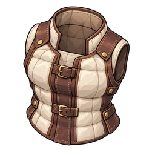

쿠션 조끼
SR 몸
솜을 듬뿍 채운 조끼. 부딪혀도 안 아프다.
개요
스킬
- 받는 데미지 -10%
레벨별 HP
Lv L의 HP = round(기본 HP × 성장률^(L-1)) + floor(고정 HP × (L-1))
| Lv | HP |
|---|---|
| Lv1 | 40 |
| Lv10 | 66 |
| Lv20 | 103 |
| Lv30 | 154 |
| Lv50 | 322 |
| Lv99 | 1966 |
레벨 상한은 처음에 20. 같은 방어구를 겹칠 때마다 10씩 오르며, 최대 99입니다.

SR 몸
솜을 듬뿍 채운 조끼. 부딪혀도 안 아프다.
Lv L의 HP = round(기본 HP × 성장률^(L-1)) + floor(고정 HP × (L-1))
| Lv | HP |
|---|---|
| Lv1 | 40 |
| Lv10 | 66 |
| Lv20 | 103 |
| Lv30 | 154 |
| Lv50 | 322 |
| Lv99 | 1966 |
레벨 상한은 처음에 20. 같은 방어구를 겹칠 때마다 10씩 오르며, 최대 99입니다.